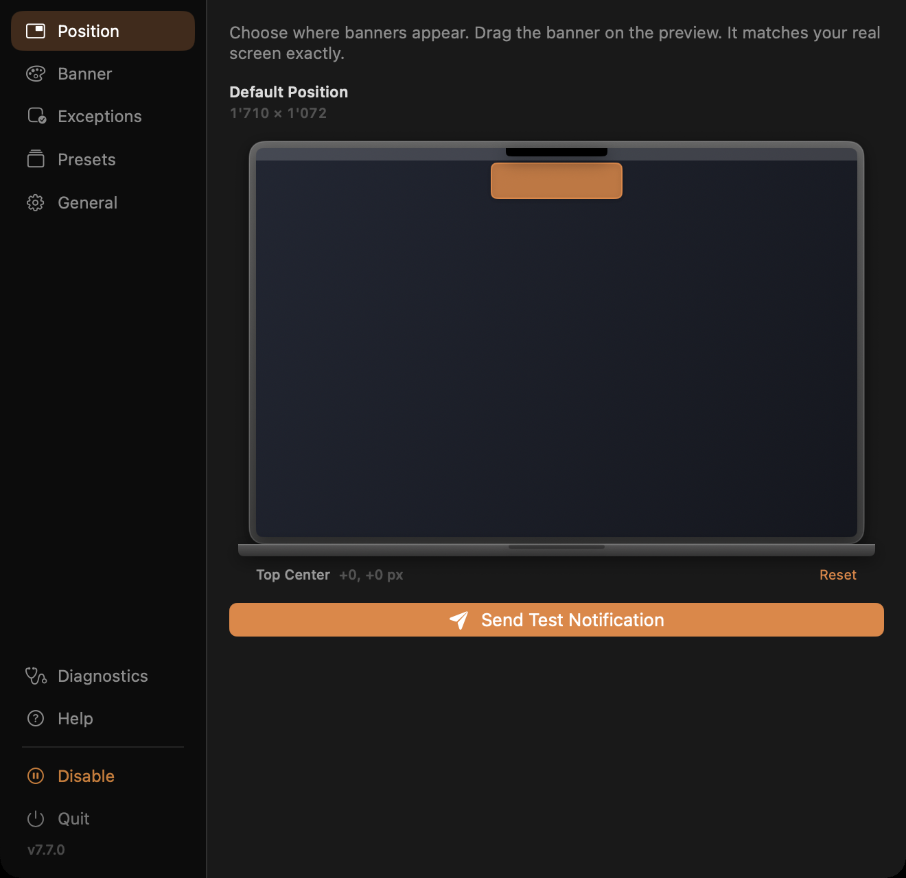
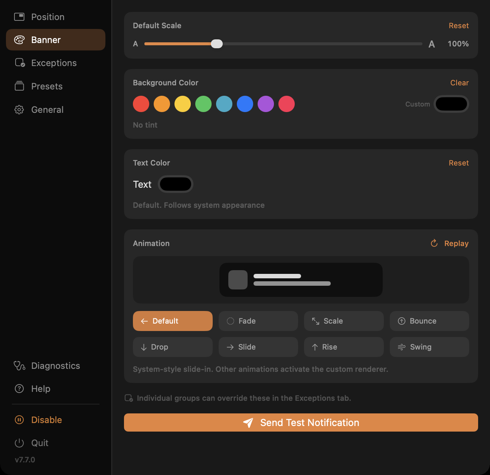
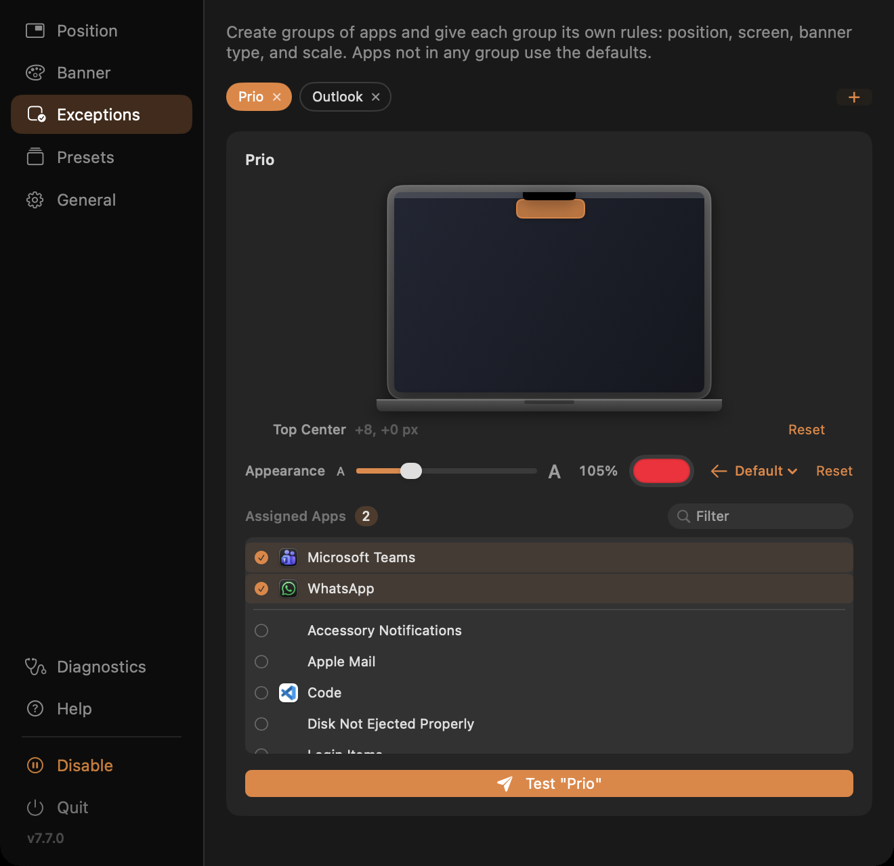
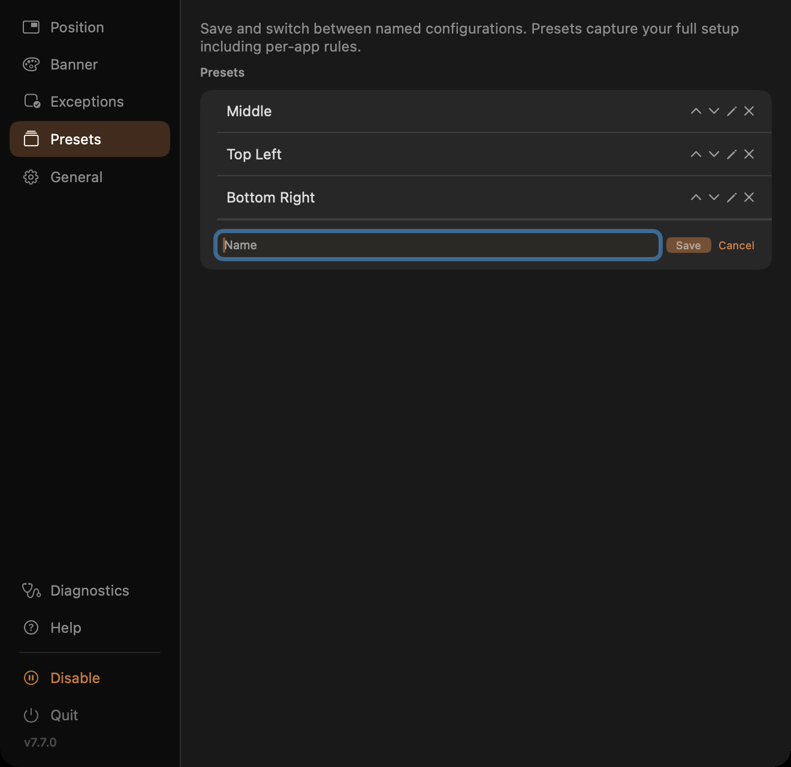
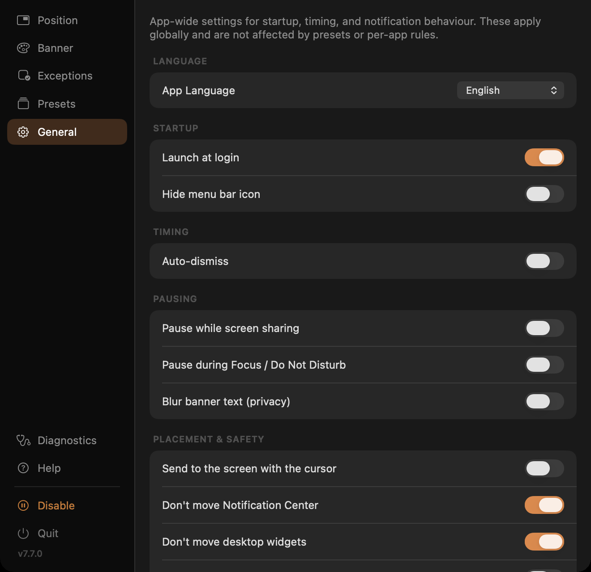
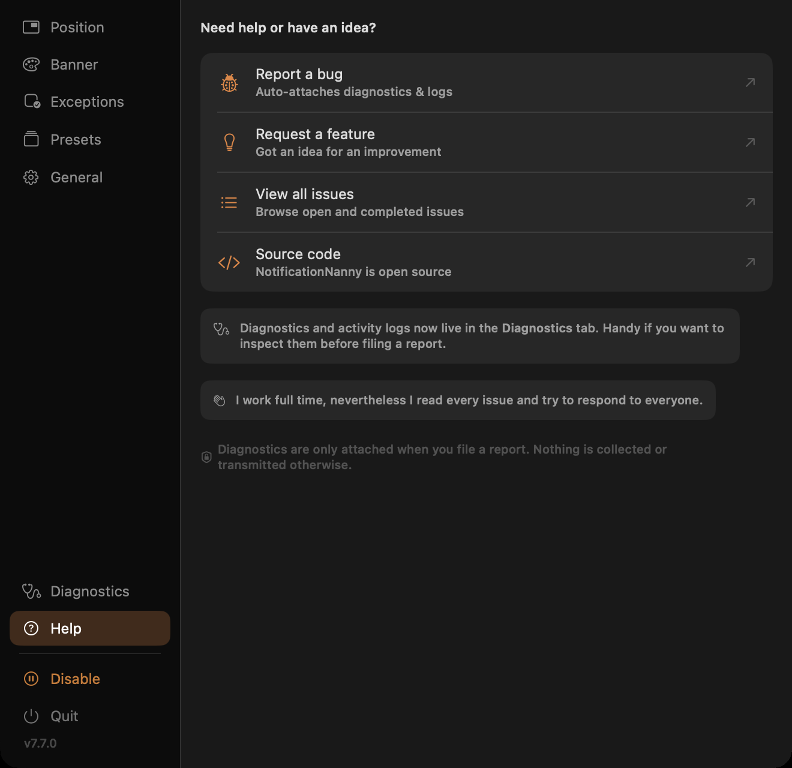

Position
Nine anchor points, pixel offsets, and independent placement per physical display. Drag it where you want it and it stays.
Position, scale, tint, and animate your notification banners globally or per app, on whichever display you want.
brew install --cask chessper53/notificationnanny/notificationnanny
Five tabs, one menu-bar icon. Drag a banner to where you want it and it stays there.






Nine anchor points, pixel offsets, and independent placement per physical display. Drag it where you want it and it stays.
Scale from 50% to 250%, tint the background, and pick an animation: Slide, Bounce, Fade, Scale, or the system default.
Group apps and give each group its own position, display, banner style, scale, and tint. Everything else uses your defaults.
Auto-dismiss on a timer, hold banners while your display is asleep, pause during Focus or screen sharing, launch at login.
Save named presets covering position, scale, animation, tint, and per-app groups. Export and restore a full configuration as JSON.
An in-app activity log of the last 500 events, so when something looks off you can see exactly what happened and when.
Homebrew is the easiest path. One command also gets you future updates.
brew tap chessper53/notificationnanny https://github.com/chessper53/NotificationNanny
brew install --cask notificationnanny
Prefer not to use Homebrew? Download the latest build directly from the
Releases page
and drag NotificationNanny.app to your Applications folder.